10.2 The 555 Timer IC
The 555 timer IC is an incredibly useful precision timer that can act as either a timer or an oscillator. In timer mode—better known as monostable mode—the 555 simply acts as a “one-shot” timer; when a trigger voltage is applied to its trigger lead, the chip’s output goes from low to high for a duration set by an external RC circuit. In oscillator mode—better know as astable mode—the 555 acts as a rectangular-wave generator whose output waveform (low duration, high duration, frequency, etc.) can be adjusted by means of two external RC charge/discharge circuits.
The 555 timer IC is easy to use (requires few components and calculations) and inexpensive and can be used in an amazing number of applications. For example, with the aid of a 555, it is possible to create digital clock waveform generators, LED and lamp flasher circuits, tone-generator circuits (sirens, metronomes, etc.), one-shot timer circuits, bounce-free switches, triangular-waveform generators, frequency dividers, etc.
10.2.1 How a 555 Works (Astable Operation)
Figure 10.6 is a simplified block diagram showing what is inside a typical 555 timer IC. The overall circuit configuration shown here (with external components included) represents the astable 555 configuration.
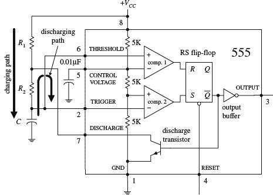
The 555 gets its name from the three 5-kΩ resistors shown in the block diagram. These resistors act as a three-step voltage divider between the supply voltage (VCC) and ground. The top of the lower 5-kΩ resistor (+ input to comparator 2) is set to 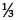VCC, while the top of the middle 5-kΩ resistor (− input to comparator 2) is set to 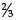VCC. The two comparators output either a high or low voltage based on the analog voltages being compared at their inputs. If one of the comparator’s positive inputs is more positive than its negative input, its output logic level goes high; if the positive input voltage is less than the negative input voltage, the output logic level goes low. The outputs of the comparators are sent to the inputs of an SR (set/reset) flip-flop. The flip-flop looks at the R and S inputs and produces either a high or a low based on the voltage states at the inputs (see Chap. 12).
FIGURE 10.6
Pin 1 (ground). IC ground.
Pin 2 (trigger). Input to comparator 2, which is used to set the flip-flop. When the voltage at pin 2 crosses from above to below VCC, the comparator switches to high, setting the flip-flop.
Pin 3 (output). The output of the 555 is driven by an inverting buffer capable of sinking or sourcing around 200 mA. The output voltage levels depend on the output current but are approximately Vout(high) = VCC – 1.5 V and Vout(low) = 0.1 V.
Pin 4 (reset). Active-low reset, which forces 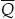 high and pin 3 (output) low.
Pin 5 (control). Used to override the VCC level, if needed, but is usually grounded via a 0.01-μF bypass capacitor (the capacitor helps eliminate VCC supply noise). An external voltage applied here will set a new trigger voltage level.
Pin 6 (threshold). Input to the upper comparator, which is used to reset the flip-flop. When the voltage at pin 6 crosses from below to above VCC, the comparator switches to a high, resetting the flip-flop.
Pin 7 (discharge). Connected to the open collector of the npn transistor. It is used to short pin 7 to ground when is high (pin 3 low). This causes the capacitor to discharge.
Pin 8 (Supply voltage VCC). Typically between 4.5 and 16 V for general-purpose TTL 555 timers. (For CMOS versions, the supply voltage may be as low as 1 V.)
In the astable configuration, when power is first applied to the system, the capacitor is uncharged. This means that 0 V is placed on pin 2, forcing comparator 2 high. This in turn sets the flip-flop so that is high and the 555’s output is low (a result of the inverting buffer). With high, the discharge transistor is turned on, which allows the capacitor to charge toward VCC through R1 and R2. When the capacitor voltage exceeds VCC, comparator 2 goes low, which has no effect on the SR flip-flop. However, when the capacitor voltage exceeds VCC, comparator 1 goes high, resetting the flip-flop and forcing high and the output low. At this point, the discharge transistor turns on and shorts pin 7 to ground, discharging the capacitor through R2. When the capacitor’s voltage drops below VCC, comparator 2’s output jumps back to a high level, setting the flip-flop and making low and the output high. With low, the transistor turns on, allowing the capacitor to start charging again. The cycle repeats over and over again. The net result is a squarewave output pattern whose voltage level is approximately VCC − 1.5 V and whose on/off periods are determined by the C, R1 and R2.
10.2.2 Basic Astable Operation
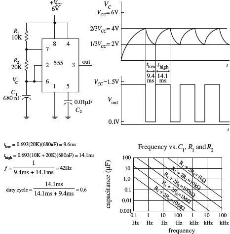
When a 555 is set up in astable mode, it has no stable states; the output jumps back and forth. The time duration Vout remains low (around 0.1 V) is set by the R1C1 time constant and the VCC and VCC levels; the time duration Vout stays high (around VCC −1.5 V) is determined by the (R1 + R2) C1 time constant and the two voltage levels (see graphs). After doing some basic calculations, the following two practical expressions arise:
tlow = 0.693R2C1
thigh = 0.693(R1 + R2)C1
The duty cycle (the fraction of the time the output is high) is given by
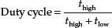
The frequency of the output waveform is
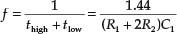
For reliable operation, the resistors should be between approximately 10 kΩ and 14 MΩ, and the timing capacitor should be from around 100 pF to 1000 μF. The graph will give you a general idea of how the frequency responds to the component values.
FIGURE 10.7
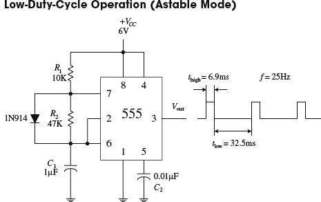
Now there is a slight problem with the last circuit—you cannot get a duty cycle that is below 0.5 (or 50 percent). In other words, you cannot make thigh shorter than tlow. For this to occur, the R1C1 network (used to generate tlow) would have to be larger the (R1 + R2)C1 network (used to generate thigh). Simple arithmetic tells us that this is impossible; (R1 + R2)C1 is always greater than R1C1. How do you remedy this situation? You attach a diode across R2, as shown in the figure. With the diode in place, as the capacitor is charging (generating thigh), the preceding time constant (R1 + R2)C1 is reduced to R1C1 because the charging current is diverted around R2 through the diode. With the diode in place, the high and low times become
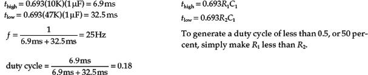
FIGURE 10.8
10.2.3 How a 555 Works (Monostable Operation)
Figure 10.9 shows a 555 hooked up in the monostable configuration (one-shot mode). Unlike the astable mode, the monostable mode has only one stable state. This means that for the output to switch states, an externally applied signal is needed.
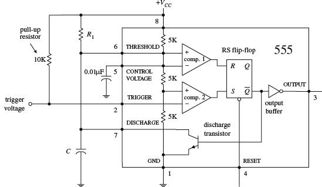
FIGURE 10.9
In the monostable configuration, initially (before a trigger pulse is applied) the 555’s output is low, while the discharge transistor is on, shorting pin 7 to ground and keeping C discharged. Also, pin 2 is normally held high by the 10-k pull-up resistor. Now, when a negative-going trigger pulse (less than VCC) is applied to pin 2, comparator 2 is forced high, which sets the flip-flop’s to low, making the output high (due to the inverting buffer), while turning off the discharge transistor. This allows C to charge up via R1 from 0 V toward VCC. However, when the voltage across the capacitor reaches VCC, comparator 1’s output goes high, resetting the flip-flop and making the output low, while turning on the discharge transistor, allowing the capacitor to quickly discharge toward 0 V. The output will be held in this stable state (low) until another trigger is applied.
10.2.4 Basic Monostable Operation
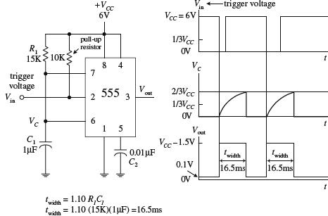
The monostable circuit only has one stable state. That is, the output rests at 0 V (in reality, more like 0.1 V) until a negative-going trigger pulse is applied to the trigger lead—pin 2. (The negative-going pulse can be implemented by momentarily grounding pin 2, say, by using a pushbutton switch attached from pin 2 to ground.) After the trigger pulse is applied, the output will go high (around VCC − 1.5 V) for the duration set by the R1C1 network. Without going through the derivations, the width of the high output pulse is
twidth = 1.10R1C1
For reliable operation, the timing resistor R1 should be between around 10 kΩ and 14 MΩ, and the timing capacitor should be from around 100 pF to 1000 μF.
FIGURE 10.10
10.2.5 Some Important Notes About 555 Timers
555 ICs are available in both bipolar and CMOS types. Bipolar 555s, like the ones you used in the preceding examples, use bipolar transistors inside, while CMOS 555s use MOSFET transistors instead. These two types of 555s also differ in terms of maximum output current, minimum supply voltage/current, minimum triggering current, and maximum switching speed. With the exception of maximum output current, the CMOS 555 surpasses the bipolar 555 in all regards. A CMOS 555 IC can be distinguished from a bipolar 555 by noting whether the part number contains a C somewhere within it (e.g., ICL7555, TLC555, LMC555, etc.). (Note that there are hybrid versions of the 555 that incorporate the best features of both the bipolar and CMOS technologies.) Table 10.1 shows specifications for a few 555 devices.
TABLE 10.1 Sample Specifications for Some 555 Devices
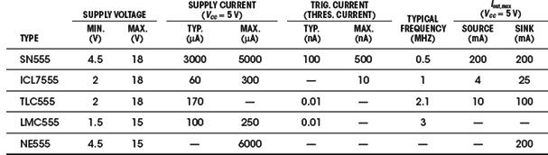
If you need more than one 555 timer per IC, check out the 556 (dual version) and 558 (quad version). The 556 contains two functionally independent 555 timers that share a common supply lead, while the 558 contains four slightly simplified 555 timers. In the 558, not all functions are brought out to the pins, and in fact, this device is intended to be used in monostable mode—although it can be tricked into astable mode with a few alterations (see manufacturer’s literature for more information).
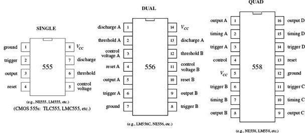
FIGURE 10.11
PRACTICAL TIP
To avoid problems associated with false triggering, connect the 555’s pin 5 to ground through a 0.01-μF capacitor (we applied this trick already in this section). Also, if the power supply lead becomes long or the timer does not seem to function for some unknown reason, try attaching a 0.1-μF or larger capacitor between pins 8 and 1.
10.2.6 Simple 555 Applications
Relay Driver (Delay Timer)
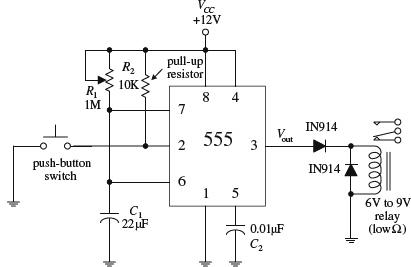
The monostable circuit shown here acts as a delay timer that is used to actuate a relay for a given duration. With the pushbutton switch open, the output is low (around 0.1 V), and the relay is at rest. However, when the switch is momentarily closed, the 555 begins its timing cycle; the output goes high (in this case ∼10.5 V) for a duration equal to
tdelay = 1.10R1C1
The relay will be actuated for the same time duration. The diodes help prevent damaging current surges—generated when the relay switches states—from damaging the 555 IC, as well as the relay’s switch contacts.
FIGURE 10.12
LED and Lamp Flasher and Metronome
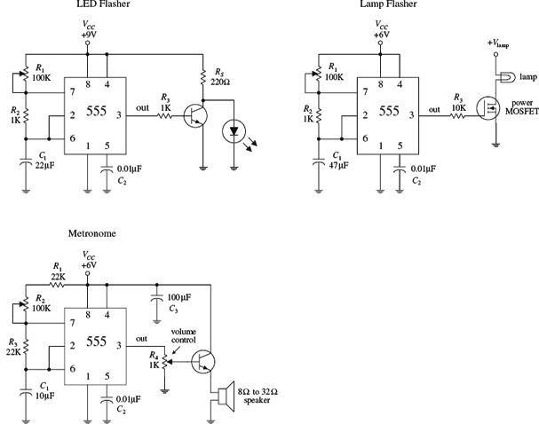
All these circuits are oscillator circuits (astable multivibrators). In the LED flasher circuit, a transistor is used to amplify the 555’s output in order to provide sufficient current to drive the LED, while RS is used to prevent excessive current from damaging the LED. In the lamp-flasher circuit, a MOSFET amplifier is used to control current flow through the lamp. A power MOSFET may be needed if the lamp draws a considerable amount of current. The metronome circuit produces a series of “clicks” at a rate determined by R2. To control the volume of the clicks, R4 can be adjusted.
FIGURE 10.13
10.3 Voltage-Controlled Oscillators
Besides the 555 timer IC, there are a number of other voltage-controlled oscillators (VCOs) on the market—some of which provide more than just a squarewave output. For example, the NE566 function generator is a very stable, easy-to-use triangular-wave and squarewave generator. In the 566 circuit below, R1 and C1 set the center frequency, while a control voltage at pin 5 varies the frequency; the control voltage is applied by means of a voltage-divider network (R2, R3, R4). The output frequency of the 566 can be determined by using the formula shown in Fig. 10.14.
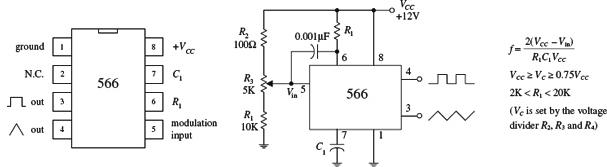
FIGURE 10.14
Other VCOs, such as the 8038 and the XR2206, can create a trio of output waveforms, including a sine wave (approximation of one, at any rate), a square wave, and triangular wave. Some VCOs are designed specifically for digital waveform generation and may use an external crystal in place of a capacitor for improved stability. To get a feel for what kinds of VCOs are out there, check the electronics catalogs.
10.4 Wien-Bridge and Twin-T Oscillators
A popular RC-type circuit used to generate low-distortion sinusoidal waves at low to moderate frequencies is the Wien-bridge oscillator. Unlike the oscillator circuits discussed already in this chapter, this oscillator uses a different kind of mechanism to provide oscillation, namely, a frequency-selective filter network.
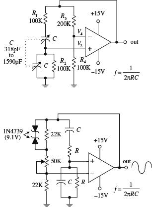
The heart of the Wien-bridge oscillator is its frequency-selective feedback network. The op amp’s output is fed back to the inputs in phase. Part of the feedback is positive (makes its way through the frequency-selective RC branch to the noninverting terminal), while the other part is negative (is sent through the resistor branch to the inverting input of the op amp). At a particular frequency f0 = 1/(2πRC), the inverting input voltage (V4) and the noninverting input voltage (V2) will be equal and in phase—the positive feedback will cancel the negative feedback, and the circuit will oscillate. At any other frequency, V2 will be too small to cancel V4, and the circuit will not oscillate. In this circuit, the gain must be set to +3. The resistors must satisfy the condition R3/R4 = 2 (which gives a noninverting gain of 3). Anything less than this value will cause oscillations to cease; anything more will cause the output to saturate. With the component values listed in the figure, this oscillator can cover a frequency range of 1 to 5 kHz. The frequency can be adjusted by means of a two-ganged variable-capacitor unit.
The second circuit shown in the figure is a slight variation of the first. Unlike the first circuit, the positive feedback must be greater than the negative feedback to sustain oscillations. The potentiometer is used to adjust the amount of negative feedback, while the RC branch controls the amount of positive feedback based on the operating frequency. Now, since the positive feedback is larger than the negative feedback, you have to contend with the “saturation problem,” as encountered in the last example. To prevent saturation, two zener diodes placed face to face (or back to back) are connected across the upper 22-kΩ resistor. When the output voltage rises above the zener’s breakdown voltage, one or the other zener diode conducts, depending on the polarity of the feedback. The conducting zener diode shunts the 22-kΩ resistor, causing the resistance of the negative feedback circuit to decrease. More negative feedback is applied to the op amp, and the output voltage is controlled to a certain degree.
FIGURE 10.15
10.5 LC Oscillators (Sinusoidal Oscillators)
When it comes to generating high-frequency sinusoidal waves, commonly used in radiofrequency applications, the most common approach is to use an LC oscillator. The RC oscillators discussed so far have difficulty handling high frequencies, mainly because it is difficult to control the phase shifts of feedback signals sent to the amplifier input and because, at high frequencies, the capacitor and resistor values often become impractical to work with. LC oscillators, on the other hand, can use small inductances in conjunction with capacitance to create feedback oscillators that can reach frequencies up to around 500 MHz. However, it is important to note that at low frequencies (e.g., audio range), LC oscillators become highly unwieldy.
LC oscillators basically consist of an amplifier that incorporates positive feedback through a frequency-selective LC circuit (or tank). The LC tank acts to eliminate from the amplifier’s input any frequencies significantly different from its natural resonant frequency. The positive feedback, along with the tank’s resonant behavior, acts to promote sustained oscillation within the overall circuit. If this is a bit confusing, envision shock exciting a parallel LC tank circuit. This action will set the tank circuit into sinusoidal oscillation at the LC’s resonant frequency—the capacitor and inductor will “toss” the charge back and forth. However, these oscillations will die out naturally due to internal resistance and loading. To sustain the oscillation, the amplifier is used. The amplifier acts to supply additional energy to the tank circuit at just the right moment to sustain oscillations. Here is a simple example to illustrate the point.
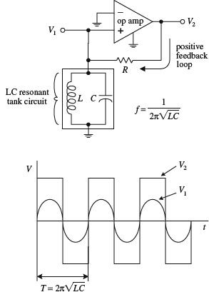
Here, an op amp incorporates positive feedback that is altered by an LC resonant filter or tank circuit. The tank eliminates from the noninverting input of the op amp any frequencies significantly different from the tank’s natural resonant frequency:
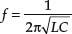
(Recall from Chap. 2 that a parallel LC resonant circuit’s impedance becomes large at the resonant frequency but falls off on either side, allowing the feedback signal to be filtered out to ground.) If a sinusoidal voltage set at the resonant frequency is present at V1, the amplifier is alternately driven to saturation in the positive and negative directions, resulting in a square wave at the output V2. This square wave has a strong fundamental Fourier component at the resonant frequency, part of which is fed back to the noninverting input through the resistor to keep oscillations from dying out. If the initially applied sinusoidal voltage at V1 is removed, oscillations will continue, and the voltage at V1 will be sinusoidal. Now in practice (considering real-life components and not theoretical models), it is not necessary to apply a sine wave to V1 to get things going (this is a fundamentally important point to note). Instead, due to imperfections in the amplifier, the oscillator will self-start. Why? With real amplifiers, there is always some inherent noise present at the output even when the inputs of the amplifier are grounded (see Chap. 8). This noise has a Fourier component at the resonant frequency, and because of the positive feedback, it rapidly grows in amplitude (perhaps in just a few cycles) until the output amplitude saturates.
FIGURE 10.16
Now, in practice, LC oscillators usually do not incorporate op amps into their designs. At very high frequencies (e.g., RF range), op amps tend to become unreliable due to slew-rate and bandwidth limitations. When frequencies above around 100 kHz are needed, it is essential to use another kind of amplifier arrangement. For high-frequency applications, what is typically used is a transistor amplifier (e.g., bipolar or FET type). The switching speeds for transistors can be incredibly high—a 2000-MHz ceiling is not uncommon for special RF transistors. However, when using a transistor amplifier within an oscillator, there may be a slight problem to contend with—one that you did not have to deal with when you used the op amp. The problem stems from the fact that transistor-like amplifiers often take their outputs at a location where the output happens to be 180° out of phase with its input (see Chap. 4). However, for the feedback to sustain oscillations, the output must be in phase with the input. In certain LC oscillators this must be remedied by incorporating a special phase-shifting network between the output and input of the amplifier. Let’s take a look at a few popular LC oscillator circuits.
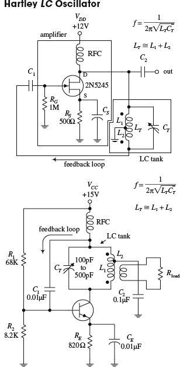
A Hartley oscillator uses an inductive voltage divider to determine the feedback ratio. The Hartley oscillator can take on a number of forms (FET, bipolar, etc.)—a JFET version is shown here. This oscillator achieves a 180° phase shift needed for positive feedback by means of a tapped inductor in the tank circuit. The phase voltage at the two ends of the inductor differ by 180° with respect to the ground tap. Feedback via L2 is coupled through C1 to the base of the transistor amplifier. (The tapped inductor is basically an autotransformer, where L1 is the primary and L2 is the secondary.) The frequency of the Hartley is determined by the tank’s resonant frequency:
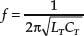
This frequency can be adjusted by varying CT. RG acts as a gate-biasing resistor to set the gate voltage. RS is the source resistor. CS is used to improve amplifier stability, while C1 and C2 act as a dc-blocking capacitor that provides low impedance at the oscillator’s operating frequency while preventing the transistor’s dc operating point from being disturbed. The radiofrequency choke (RFC) aids in providing the amplifier with a steady dc supply while eliminating unwanted ac disturbances.
The second circuit is another form of the Hartley oscillator that uses a bipolar transistor instead of a JFET as the amplifier element. The frequency of operation is again determined by the resonant frequency of the LC tank. Notice that in this circuit the load is coupled to the oscillator via a transformer’s secondary.
FIGURE 10.17
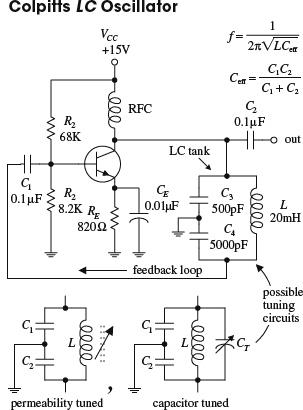
The Colpitts oscillator is adaptable to a wide range of frequencies and can have better stability than the Hartley. Unlike the Hartley, feedback is obtained by means of a tap between two capacitors connected in series. The 180° phase shift required for sustained oscillation is achieved by using the fact that the two capacitors are in series; the ac circulating current in the LC circuit (see Chap. 2) produces voltage drops across each capacitor that are of opposite signs—relative to ground—at any instant in time. As the tank circuit oscillates, its two ends are at equal and opposite voltages, and this voltage is divided across the two capacitors. The signal voltage across C4 is then connected to the transistor’s base via coupling capacitor C1, which is part of the signal from the collector. The collector signal is applied across C3 as a feedback signal whose energy is coupled into the tank circuit to compensate for losses. The operating frequency of the oscillator is determined by the resonant frequency of the LC tank:
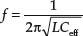
where Ceff is the series capacitance of C3 and C4:
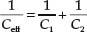
C1 and C2 are dc-blocking capacitors, while R1 and R2 act to set the bias level of the transistor. The RFC choke is used to supply steady dc to the amplifier. This circuit’s tank can be exchanged for one of the two adjustable tank networks. One tank uses permeability tuning (variable inductor), while the other uses a tuning capacitor placed across the inductor to vary the resonant frequency of the tank.
FIGURE 10.18
The Clapp oscillator has exceptional frequency stability. It is a simple variation of the Colpitts oscillator. The total tank capacitance is the series combination of C1 and C2. The effective inductance L of the tank is varied by changing the net reactance by adding and subtracting capacitive reactance via CT from inductive reactance of LT. Usually C1 and C2 are much larger than CT, while LT and CT are series resonant at the desired frequency of operation. C1 and C2 determine the feedback ratio, and they are so large compared with CT that adjusting CT has almost no effect on feedback. The Clapp oscillator achieves its reputation for stability since stray capacitances are swamped out by C1 and C2, meaning that the frequency is almost entirely determined by LT and CT. The frequency of operation is determined by
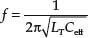
where Ceff is
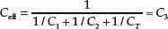
FIGURE 10.19
10.6 Crystal Oscillators
When stability and accuracy become critical in oscillator design—which is often the case in high-quality radio and microprocessor applications—one of the best approaches is to use a crystal oscillator. The stability of a crystal oscillator (from around 0.01 to 0.001 percent) is much greater than that of an RC oscillator (around 0.1 percent) or an LC oscillator (around 0.01 percent at best).
When a quartz crystal is cut in a specific manner and placed between two conductive plates that act as leads, the resulting two-lead device resembles an RLC tuned resonant tank. When the crystal is shock-excited by either a physical compression or an applied voltage, it will be set into mechanical vibration at a specific frequency and will continue to vibrate for some time, while at the same time generating an ac voltage between its plates. This behavior, better know as the piezoelectric effect, is similar to the damped electron oscillation of a shock-excited LC circuit. However, unlike an LC circuit, the oscillation of the crystal after the initial shock excitation will last longer—a result of the crystal’s naturally high Q value. For a high-quality crystal, a Q of 100,000 is not uncommon. LC circuits typically have a Q of around a few hundred.
The RLC circuit shown in Fig. 10.20 is used as an equivalent circuit for a crystal. The lower branch of the equivalent circuit, consisting of R1, C1, and L1 in series, is called the motional arm. The motional arm represents the series mechanical resonance of the crystal. The upper branch containing C0 accounts for the stray capacitance in the crystal holder and leads. The motional inductance L1 is usually many henries in size, while the motional capacitance C1 is very small (<<1 pF). The ratio of L1 to C1 for a crystal is much higher than could be achieved with real inductors and capacitors. Both the internal resistance of the crystal R1 and the value of C0 are both fairly small. (For a 1-MHz crystal, the typical components values within the equivalent circuit would be L1 = 3.5 H, C1 = 0.007 pF, R1 = 340 Ω, C0 = 3 pF. For a 10-MHz fundamental crystal, the typical values would be L1 = 9.8 mH, C1 = 0.026 pF, R1 = 7 Ω, C0 = 6.3 pF.)
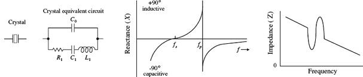
FIGURE 10.20
In terms of operation, a crystal can be driven at series resonance or parallel resonance. In series resonance, when the crystal is driven at a particular frequency, called the series resonant frequency fs, the crystal resembles a series-tuned resonance LC circuit; the impedance across it goes to a minimum—only R1 remains. In parallel resonance, when the crystal is driven at what is called the parallel resonant frequency fp, the crystal resembles a parallel-tuned LC tank; the impedance across it peaks to a high value (see the graphs in Fig. 10.20).
Quartz crystals come in series-mode and parallel-mode forms and may either be specified as a fundamental-type or an overtone-type crystal. Fundamental-type crystals are designed for operation at the crystal’s fundamental frequency, while overtone-type crystals are designed for operation at one of the crystal’s overtone frequencies. (The fundamental frequency of a crystal is accompanied by harmonics or overtone modes, which are odd multiples of the fundamental frequency. For example, a crystal with a 15-MHz fundamental also will have a 45-MHz third overtone, a 75-MHz fifth overtone, a 135-MHz ninth overtone, etc. Figure 10.21 below shows an equivalent RLC circuit for a crystal, along with a response curve, both of which take into account the overtones.) Fundamental-type crystals are available from around 10 kHz to 30 MHz, while overtone-type crystals are available up to a few hundred megahertz. Common frequencies available are 100 kHz and 1.0, 2.0, 4, 5, 8, and 10 MHz.
Designing crystal oscillator circuits is similar to designing LC oscillator circuits, except that now you replace the LC tank with a crystal. The crystal will supply positive feedback and gain at its series or parallel resonant frequency, hence leading to sustained oscillations. Here are a few basic crystal oscillator circuits to get you started.
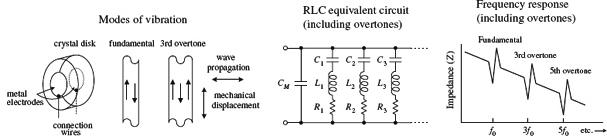
FIGURE 10.21
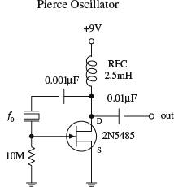
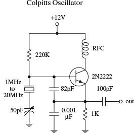
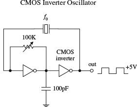
The simple op amp circuit shown here resembles the LC oscillator circuit in Fig. 10.16, except that it uses the series resonance of the crystal instead of the parallel resonance of an LC circuit to provide positive feedback at the desired frequency. Other crystal oscillators, such as the Pierce oscillator, Colpitts oscillator, and a CMOS inverter oscillator, shown below, also incorporate a crystal as a frequency-determining component. The Pierce oscillator, which uses a JFET amplifier stage, employs a crystal as a series-resonant feedback element; maximum positive feedback from drain to gate occurs only at the crystal’s series-resonant frequency. The Colpitts circuit, unlike the Pierce circuit, uses a crystal in the parallel feedback arrangement; maximum base-emitter voltage signal occurs at the crystal’s parallel-resonant frequency. The CMOS circuit uses a pair of CMOS inverters along with a crystal that acts as a series-resonant feedback element; maximum positive feedback occurs at the crystal’s series resonant frequency.
FIGURE 10.22
There are a number of ICs available that can make designing crystal oscillators a breeze. Some of these ICs, such as the 74S124 TTL VCO (squarewave generator), can be programmed by an external crystal to output a waveform whose frequency is determined by the crystal’s resonant frequency. The MC12060 VCO, unlike the 74S124, outputs a pair of sine waves. Check the catalogs to see what other types of oscillator ICs are available.
Now there are also crystal oscillator modules that contain everything (crystal and all) in one single package. These modules resemble a metal-like DIP package, and they are available in many of the standard frequencies (e.g., 1, 2, 4, 5, 6, 10, 16, 24, 25, 50, and 64 MHz, etc.). Again, check out the electronics catalogs to see what is available.
10.7 Microcontroller Oscillators
In Chap. 13, we will also see how a microcontroller can be used to generate a waveform using a digital-to-analog convertor. The basic technique is to store the waveform in memory and then play it through the digital-to-analog converter.
In the case where just a squarewave is required, a simple 8-pin microcontroller with a built-in clock can be an effective alternative to a 555 timer, requiring fewer external components.
Voltage Regulators and Power Supplies
Circuits usually require a dc power supply that can maintain a fixed voltage while supplying enough current to drive a load. Batteries make good dc supplies, but their relatively small current capacities make them impractical for driving high-current, frequently used circuits. An alternative solution is to take a 120-V ac, 60-Hz line voltage and convert it into a usable dc voltage.
There are two approaches to this. The more traditional approach is to use a step-down transformer. The other approach is to use a “switch-mode” power supply. This latter method has all but taken over from step-down transformers in recent years, and is the reason your “wall-wart” black plastic power adapters have become smaller and lighter. They also have the advantage that they will often work without modification or switch flipping on the higher line voltages found in other parts of the world. We’ll discuss both methods in this chapter, beginning with the step-down transformer approach.
The trick to converting the ac line voltage into a usable (typically lower-level) dc voltage is to first use a transformer to step down the ac voltage. After that, the transformed voltage is applied through a rectifier network to get rid of the negative swings (or positive swings if you are designing a negative voltage supply). Once the negative swings are eliminated, a filter network is used to flatten out the rectified signal into a nearly flat (rippled) dc voltage pattern. Figure 11.1 shows the process in action.
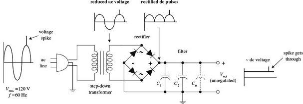
FIGURE 11.1
Now there is one problem with this supply—it is unregulated. This means that if there are any sudden surges within the ac input voltage (spikes, dips, etc.), these variations will be expressed at the supply’s output (notice the spike that gets through in Fig. 11.1). Using an unregulated supply to run sensitive circuits (e.g., digital IC circuits) is a bad idea. The current spikes can lead to improper operating characteristics (e.g., false triggering, etc.) and may destroy the ICs in the process. An unregulated supply also has a problem maintaining a constant output voltage as the load resistance changes. If a highly resistive (low-current) load is replaced with a lower-resistance (high-current) load, the unregulated output voltage will drop (Ohm’s law).
Fortunately, there is a special circuit that can be placed across the output of an unregulated supply to convert it into a regulated supply—a supply that eliminates the spikes and maintains a constant output voltage with load variations (see Fig. 11.2). This special circuit is called a voltage regulator.
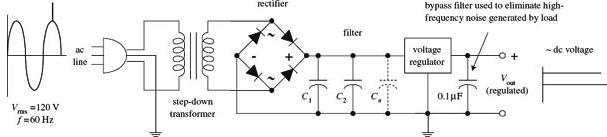
FIGURE 11.2
A voltage regulator is designed to automatically adjust the amount of current flowing through a load—so as to maintain a constant output voltage—by comparing the supply’s dc output with a fixed or programmed internal reference voltage. A simple regulator consists of a sampling circuit, an error amplifier, a conduction element, and a voltage reference element (see Fig. 11.3).
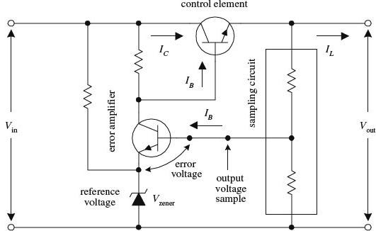
FIGURE 11.3
The regulator’s sampling circuit (voltage divider) monitors the output voltage by feeding a sample voltage back to the error amplifier. The reference voltage element (zener diode) acts to maintain a constant reference voltage that is used by the error amplifier. The error amplifier compares the output sample voltage with the reference voltage and then generates an error voltage if there is any difference between the two. The error amplifier’s output is then fed to the current-control element (transistor), which is used to control the load current.
In practice, you do not have to worry about designing voltage-regulator circuits from scratch. Instead, what you do is spend 50 cents for a voltage-regulator IC. Let’s take a closer look at these integrated devices.
11.1 Voltage-Regulator ICs
There are a number of different kinds of voltage-regulator ICs on the market today. Some of these devices are designed to output a fixed positive voltage, some are designed to output a fixed negative voltage, and others are designed to be adjustable.
11.1.1 Fixed Regulator ICs
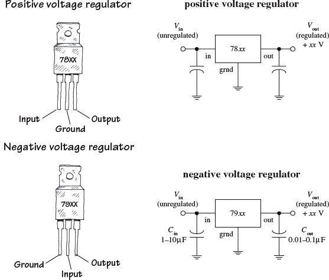
One popular line of regulators includes the three-terminal LM78xx series shown here. The “xx” digits represent the output voltage, e.g., 7805 (5 V), 7806 (6 V), 7808 (8 V), 7810 (10 V), 7812 (12 V), 7815 (15 V), 7818 (18 V), and 7824 (24 V). These devices can handle a maximum output current of 1.5 A if properly heat-sunk. To remove unwanted input or output spikes/noise, capacitors can be attached to the regulator’s input and output terminals, as shown in the figure. A popular series of negative voltage-regulator IC is the LM79xx regulators, where “xx” represent the negative output voltage. These devices can handle a maximum output current of 1.5 A. A number of different manufacturers make their own kinds of voltage regulators. Some of the regulators can handle more current than others.
These devices are also available as SMD parts, typically in a SOT-89 package. Be sure to check the data sheets though, as these parts often have a lower maximum output current than their through-hole siblings.
Check out the catalogs to see what is available.
FIGURE 11.4
11.1.2 Adjustable Regulator ICs
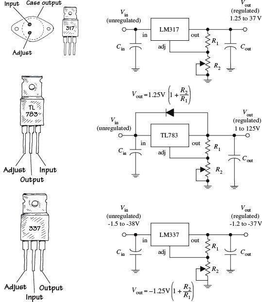
The LM317 regulator shown here is a popular 3-terminal adjustable positive voltage regulator. Unlike the 7800 fixed voltage-regulator series, the LM317 is a floating regulator—it sees only the input-to-output differential voltage—and it can be programmed via two external resistors to set the output voltage. In operation, the LM317 develops a nominal 1.25 V reference voltage between the output and adjust terminals. This reference voltage is impressed across program resistor R1, and since this voltage is constant, a constant current I1 flows through the output set resistor R2, giving an output voltage given by the equation shown in the figure. Increasing R2 forces the regulator’s output to a higher level. The LM317 is designed to accept an unregulated input voltage of up to 37 V and can output a maximum current of 1.5 A. The TL783 is another positive adjustable regulator that can output a regulated voltage of from 1 to 125 V, with a maximum output current of 700 mA. The LM337T, unlike the previous two regulators, is an adjustable negative voltage regulator. It can output a regulated voltage of from –1.2 V to –37 V, with a maximum output current of 1.5 A. Again, check the electronics catalogs to see what other kinds of adjustable regulators are available. (Cin should be included if the regulator is far from the power source; it should be around 0.1 μF or so. Cout is used to eliminate voltage spikes at the output; it should be around 0.1 μF or larger.)
FIGURE 11.5
11.1.3 Regulator Specifications
The specifications tables for regulators typically will provide you with the following information: output voltage, accuracy (percent), maximum output current, power dissipation, maximum and minimum input voltage, 120-Hz ripple rejection (decibels), temperature stability (ΔVout/ΔT), and output impedance (at specific frequencies). A regulator’s ripple rejection feature can greatly reduce voltage variations in a power supply’s output, as you will discover later in this chapter.
11.2 A Quick Look at a Few Regulator Applications
Before we take a look at how voltage regulators are used in power supplies, it is worthwhile seeing how they are used in other types of applications. Here are a few examples.
FIGURE 11.6
The constant current regulator is often used as a power supply for LEDs, especially the higher-power devices.
11.3
The Transformer
It is important that you choose the right transformer for your power supply. The transformer’s secondary voltage should not be much larger than the output voltage of the regulator; otherwise, energy will be wasted because the regulator will be forced to dissipate heat. However, at the same time, the secondary voltage must not drop below the required minimum input voltage of the regulator (typically 2 to 3 V above its output voltage).
11.4
Rectifier Packages
Three basic rectifier networks used in power supply designs include the half-wave, full-wave, and bridge rectifiers, shown in Fig. 11.7. To understand how these rectifiers work, see Chap. 4.
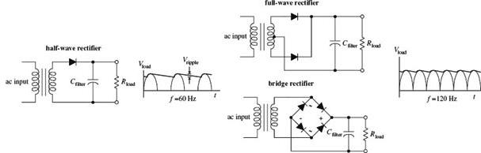
FIGURE 11.7
Half-wave, full-wave, and bridge rectifiers can be constructed entirely from individual diodes. However, both full-wave and bridge rectifiers also come in preassembled packages (see Fig. 11.8).
FIGURE 11.8
Make sure that the power supply’s rectifier diodes have the proper current and peak-inverse-voltage (PIV) ratings. Typical rectifier diodes have current ratings from 1 to 25 A, PIV ratings from 50 to 1000 V, and surge-current ratings from around 30 to 400 A. Popular general-purpose rectifier diodes include the 1N4001 to 1N4007 series (rated at 1 A, 0.9-V forward voltage drop), the 1N5059 to 1N5062 series (rated at 2 A, 1.0-V forward voltage drop), the 1N5624 to 1N5627 series (rated at 5 A, 1.0-V forward voltage drop), and the 1N1183A-90A (rated at 40 A, 0.9-V forward voltage drop). For low-voltage applications, Schottky barrier rectifiers can be used; the voltage drop across these rectifiers is smaller than a typical rectifier (typically less than 0.4 V); however, their breakdown voltages are significantly smaller. Popular full-wave bridge rectifiers include the 3N246 to 3N252 series (rated at 1 A, 0.9-V forward voltage drop) and the 3N253 to 3N259 series (rated at 2 A, 0.85-V forward voltage drop).
11.5 A Few Simple Power Supplies
Regulated +5-V Supplies
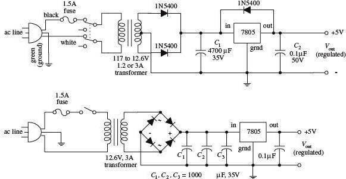
The first supply uses a center-tapped transformer rated at 12.6 V at 1.2 to 3 A. The voltage after rectification resides at an 8.9-V peak pulse. The filter capacitor (C1) smoothes the pulses, and the 7805 outputs a regulated +5 V. C2 is placed across the output of the regulator to bypass high-frequency noise that might be generated by the load. The diode placed across the 7805 helps protect the regulator from damaging reverse-current surges generated by the load. Such surges may result when the power supply is turned off. For example, the capacitance across the output may discharge more slowly than the capacitance across the input. This would reverse-bias the regulator and could damage it in the process. The diode diverts the unwanted current away from the regulator. The second power supply is similar to the first but uses a bridge rectifier.
FIGURE 11.9
FIGURE 11.10a This dual-polarity linear power supply will provide any positive or negative voltage between 1.2 and 35 V. The complementary regulators—LM317 (+) and LM337 (−)—can deliver up to 1.5 A (output voltage dependent) if provided adequate heat sinking. This is sufficient for testing or powering a wide variety of everyday circuits. The key is the center-tap transformer with secondary tapped to ground that supplies both positive and negative voltages relative to ground. It converts the line voltage from 120 VAC to 48 VAC at the secondary, which is center-tapped and divided into 24-VAC portions. By using the center tap as a ground or common connection, it is possible to get both positive and negative outputs relative to ground. The diodes rectify the ac from the transformer output into a pulsing dc waveform. C1 and C2 electrolytic capacitors perform bulk filtering of the pulsing dc waveform, resulting in a raw dc voltage. C3 and C4 are small film capacitors bypassing the electrolytic capacitors to improve transient response and filter high-frequency line noise. The LM317 (+) and LM337 (−) are complementary adjustable voltage regulators, whose output can be programmed with two external resistors. The output voltage is given by:
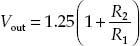
C5 and C6 improve the regulators’ ripple rejection from 65 dB to 80 dB by preventing ripple voltage from being amplified at the output of the regulator. C7 and C8 electrolytic capacitors stiffen the output voltage and reduce output impedance. C9 and C10 are small bypass capacitors to filter any high-frequency noise present at the output. All bypass capacitors should have low impedance (e.g., polyester, polypropylene, polystyrene, or Mylar film capacitors are okay). A 48-VAC CT (24-0-24) transformer is about the practical upper limit of commonly available models. This limit is set by the maximum input voltage of the regulators, and also by the bulk filter capacitors that are rated at 35 VDC.
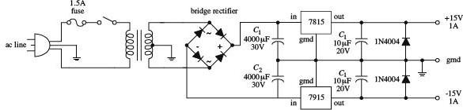
Here, a 7815 positive voltage regulator and a 7915 negative voltage regulator are used to construct a ±15-V supply.
FIGURE 11.10b
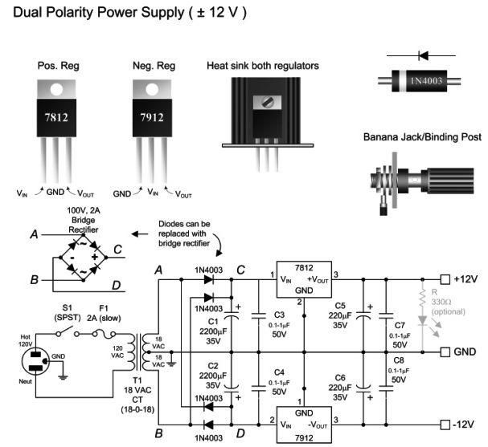
FIGURE 11.10c Here’s a fixed +/-12 V made by using a center-tap 18-VAC transformer, a full-wave rectifier, and 7812 and 7912 regulators. This circuit is particularly useful when powering op amp circuits.
This figure shows a simple way to add an external dc power supply input to a battery-powered device. With no external power (external dc adapter plug not connected), the shorting jack acts to switch power to the battery. However, when external dc power is applied via a dc adapter plug, the shorting jack switches power from the battery to the dc adapter connects.
FIGURE 11.11
11.6 Technical Points About Ripple Reduction
When using a supply to power sensitive circuits, it is essential to keep the variation in output voltage as small as possible. For example, when driving digital circuits from a 5-V supply, the variation in output voltage should be no more than 5 percent, or 0.25 V, if not lower. In fact, digital logic circuits usually have a minimum 200-mV noise margin around critical logic levels. Small analog signal circuits can be especially finicky when it comes to output variations. For example, they may require a variation less than 1 percent to operate properly. How do you keep the output variation error low? You use filter capacitors and voltage regulators.
Filter capacitors act to reduce the fluctuations in output by storing charge during the positive-going rectifier cycle and then releasing charge through the load—at a slow enough rate to maintain a level output voltage—during the negative-going rectifier cycle. If the filter capacitor is too small, it will not be able to store enough charge to maintain the load current and output voltage during the negative-going cycle.
As it turns out, the amount of current drawn by a load influences the rate of capacitor discharge. If a low-resistance, high-current load is placed across the supply’s output, the capacitor will discharge relatively quickly, causing the voltage across the capacitor and therefore the voltage across the load to drop relatively quickly. On the other hand, a highly resistive, low-current load will cause the capacitor to discharge more slowly, which means the dip in output voltage will not be as significant. To calculate the drop in voltage of the capacitor during its discharge cycle, use
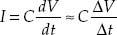
where I is the load current, Δt is the discharge time, and ΔV is the fluctuation in output above and below the average dc level. ΔV is also referred to as the peak-to-peak ripple voltage Vripple(pp). (Here, I cheated by substituting straight lines for exponential decays to describe the discharge cycle; see Fig. 11.12.) Δt can be approximated by dividing 1 by the rectified output voltage frequency. For a full-wave rectifier, the period is 1/120 Hz, or 8.3 × 10−3 s. In reality, the actual amount of time the capacitor spends discharging during a peak-to-peak variation is about 5 ms. The other 3.3 ms is used up during the charge. To make life easier on you, the following equation simplifies matters:
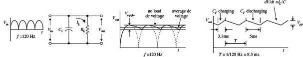
FIGURE 11.12
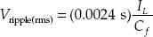
Note that the ripple voltage is not given in the peak-to-peak form but is given in the rms form (recall that Vpp = 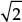Vrms). To test the equation out, let’s find the ripple voltage for a 5-V supply that has a 4700-μF filter capacitor and a maximum load current of 1.0 A. (Here I am pretending that no voltage regulator is present at this point.) After plugging the numbers into the equation, you get Vripple(rms) = 510 mV. But now, recall that a minute ago I said that the amount of variation in the output had to be ±0.25 V% to run digital ICs—510 mV is too big. Now you could keep fiddling around with the capacitance value in the equation and come up with an even better answer, say, letting C equal infinity. In theory, this is fine, but in reality, it is not fine. It is not fine for three basic reasons. The first reason has to do with the simple fact that you cannot find a capacitor at Radio Shack that has an infinite capacitance. If an infinite-capacitance capacitor existed, the universe would not be the same, and you and I probably would not be around to talk about it. The second reason has to do with capacitor tolerances. Unfortunately, the high-capacity electrolytic capacitors used in power supplies have some of the worst tolerances among the capacitor families. It is not uncommon to see a 5 to 20 percent or even larger percentage tolerance for these devices. The mere fact that the tolerances are so bad makes being “nitpicky” about the equation a questionable thing to do. The third and perhaps most important reason for avoiding fiddling around with the equation too much has to do with the inherent ripple-rejection characteristics of voltage regulators. As you will see, the voltage regulator can save us.
Voltage regulators often come with a ripple-rejection parameter given in decibels. For example, the 7805 has a ripple-rejection characteristic of about 60 dB. Using the attenuation expression, you can find the extent of the ripple reduction:
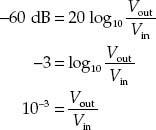
The last expression says that the output ripple is reduced by a factor of 1000. This means that if you use the regulator with the initial setup, you will only have an output ripple of 0.51 mV—a value well within the safety limits. At this point, it is important to note that the 7805 requires a minimum voltage difference between its input and output of 3 V to function properly. This means that to obtain a 5-V output, the input to the regulator must be at least 8 V. At the same time, it is important to note the voltage drop across the rectifier (typically around 1 to 2 V). The secondary voltage from the transformer therefore should be even larger than 8 V. A transformer with a secondary voltage of 12 V or so would be a suitable choice for the 5-V supply.
Now let’s see how well the LM319 adjustable regulator rejects the ripple. Let’s say that an LM317 is used in a power supply that has a transformer secondary rms voltage of 12.6 V. The capacitor’s peak voltage during a cycle will be 17.8 V (the peak-to-peak voltage of the secondary). An LM317 has a ripple-rejection characteristic of around 65 dB, but this value can be raised to approximately 80 dB by bypassing the LM317’s voltage divider with a 10-μF capacitor (see Fig. 11.13).
FIGURE 11.13
If you let C = 4700 μF and assume a 1.5-A maximum load current, you get a ripple voltage of
Vr(rms) = 0.0024 s(1.5 A/4700 μF) = 760 mV
Again, the ripple voltage is too much for sensitive ICs to handle. However, if you consider the LM319’s ripple-rejection characteristic (assuming that you use the bypassing capacitor), you get a reduction of
In other words, the output ripple is reduced by a factor of 10,000, so the final output ripple voltage is only 0.076 mV.
11.7 Loose Ends
Line Filter and Transients Suppressors
A line filter is an LC filter circuit that is inserted into a supply to filter out unwanted high-frequency interference present in the input line supply. Line filters also can help reduce voltage spikes, as well as help eliminate the emission of radiofrequency interference by the power supply. Line filters are placed before the transformer, as shown in the figure. AC line filters can be purchased in preassembled packages. See the electronics catalogs for more info.
A transient suppressor is a device that acts to short out when the terminal voltage exceeds safe limits (e.g., spikes). These devices act like bidirectional high-power zener diodes. They are inexpensive, come in diode-like packages, and come with low-voltage and peak-pulse-voltage ratings.
FIGURE 11.14
The crowbar and clamp circuits shown here can be placed across the output of a regulated supply to protect a load against an unregulated voltage that would be present at the output if the voltage regulator failed (shorted internally).
CROWBAR
For the crowbar circuit, when the supply voltage exceeds the zener diode’s breakdown voltage by 0.6 V, the zener diode conducts, triggering the SCR into conduction. The SCR then diverts potentially harmful current to ground. The crowbar’s SCR will not turn off until the power supply is turned off or the SCR’s anode-to-cathode current is interrupted, say, by means of a switch.
CLAMP
A zener diode placed across the output of a supply also can be used for overvoltage protection. However, it may “fry” if the unregulated current is too large. To avoid frying the zener diode, use a high-power transistor to help divert the current. When the zener diode’s breakdown voltage is exceeded, some of the current that flows through it will enter the transistor’s base, allowing the excessive current to flow toward ground. Using clamps can eliminate false triggering caused by voltage spikes; the crowbar, on the other hand, would need to be reset in such a case.
FIGURE 11.15
Bleeder Resistors and Transient Suppressors
When a resistor is placed across the output of the unregulated supply, it will act to discharge the high-voltage (potentially lethal) filter capacitor when the supply is turned off and the load removed. Such a resistor is referred to as a bleeder resistor. A 1-k, 1/2-W resistor is suitable for most applications.
An RC network placed across the primary coil of the transformer can prevent large, potentially damaging inductive transients from forming when the supply is turned off. The capacitor must have a high voltage rating. A typical RC network consists of a 100-Ω resistor and a 0.1-µF, 1-kV capacitor. Special z-lead transient suppressor devices can also be used, as was mentioned earlier.
FIGURE 11.16
11.8 Switching Regulator Supplies (Switchers)
A switching power supply, or switcher, is a unique kind of power supply that can achieve power conversion efficiencies far exceeding those of the linear supplies covered earlier in this chapter. With linear regulated supplies, the regulator converts the input voltage that is higher than needed into a desired lower output voltage. To lower the voltage, the extra energy is dissipated as heat from the regulator’s control element. The power-conversion efficiency (Pout/Pin) for these supplies is typically lower than 50 percent. This means that more than half the power is dissipated as heat.
Switchers, on the other hand, can achieve power-conversion efficiencies exceeding 85 percent, meaning that they are much more energy efficient than linearly regulated supplies. Switchers also have a wide current and voltage operating range and can be configured in either step-down (output voltage smaller than input voltage), step-up (output voltage larger than input voltage), or inverting (output is the opposite polarity of the input) configurations. Also, switchers can be designed to run directly off ac line power, without the need for a power transformer. By eliminating the hefty power transformer, the switcher can be made light and small. This makes switchers good supplies for computers and other small devices.
A switching supply resembles a linear supply in many ways. However, two unique features include an energy-storage inductor and a nonlinear regulator network. Unlike a linear supply, which provides regulation by varying the resistance of the regulator’s control element, a switcher incorporates a regulation system in which the control element is switched on and off very rapidly. The on/off pulses are controlled by an oscillator/error amplifier/pulse-width modulator network (see Fig. 11.17).
FIGURE 11.17
During the on cycle, energy is pumped into the inductor (energy is stored in the magnetic fields about the inductor’s coil). When the control element is turned off, the stored energy in the inductor is directed by the diode into the filter and into the load. The sampling circuit (R2 and R3) takes a sample of the output voltage and feeds the sample to one of the inputs of the error amplifier. The error amplifier then compares the sample voltage with a reference voltage applied to its other input. If the sample voltage is below the reference voltage, the error amplifier increases its output control voltage. This control voltage is then sent to the pulse-width modulator. (If the sample voltage is above the reference voltage, the error amplifier will decrease the output voltage it sends to the modulator.) While this is going on, the oscillator is supplying a steady series of triggering voltage pulses to the pulse-width modulator. The modulator uses both the oscillator’s pulses and the error amplifier’s output to produce a modified on/off signal that is sent to the control element’s base. The modified signal represents a squarewave whose on time is determined by the input error voltage. If the error voltage is low (meaning the sample voltage is higher than it should be), the modulator sends a short-duration on pulse to the control element. However, if the error voltage is high (meaning the sample voltage is lower than it should be), the pulse-width modulator sends a long-duration on pulse to the control element. (The graph in Fig. 11.17 shows how the oscillator, error amplifier, and pulse-width modulator outputs are related.) Using a series of on/off pulses that can be varied in frequency and duration gives the switching regulator its exceptional efficiency; releasing a series of short pulses of energy over time is more efficient than taking excessive supply energy and radiating it off as heat (linear supply).
Figure 11.18 shows a typical switching regulator arrangement. The 556 dual-timer IC houses both the oscillator and pulse-width modulator, while the UA723 voltage-regulator IC acts as the error amplifier. R2 and R3 comprise the sampling network, R6 and R7 set the reference voltage, and R4 and R5 set the final control voltage that is sent to the pulse-width modulator.
FIGURE 11.18
Step-Up, Step-Down, and Inverting Configurations
The switching regulator in Fig. 11.17 is referred to as a step-down regulator. It is used when the regulated output voltage is to be lower than the regulator input voltage. Now, switching regulators also come in step-up and inverting configurations. The step-up version is used when the output is to be higher than the input, whereas the inverting version is used when the output voltage is to be the opposite polarity of the input voltage. Here’s an overview of the three configurations.
STEP-DOWN REGULATOR
This is used when output voltage is to be lower than input voltage. When the control element is on, L stores energy, helps supply load current, and supplies current to the filter capacitor. When the control element is off, the energy stored in L helps supply load current but again restores charge on CF—the charge on CF is used to supply the load when the control element turns off and L has discharged its energy.
FIGURE 11.19
STEP-UP SWITCHER REGULATOR
This is used when output is to be higher than input voltage. When the control element is on, energy is stored in the inductor. The load, isolated by the diode, is supplied by the charge stored in CF. When the control element is off, the energy stored in L is added to the input voltage. At the same time, L supplies load current, as well as restoring the charge on CF—the charge on CF is used to supply the load current when the control element is off and when the energy in L is discharged.
FIGURE 11.20
INVERTING SWITCHER REGULATOR
This is used when output voltage is to be the opposite polarity of the input voltage. When the control element is on, energy is stored in L, while the diode isolates L from load. The load current is supplied by the charge on CF. When the control element is turned off, the energy stored in L charges CF to a polarity such that Vout is negative. IL supplies load current and restores the charge on CF while it is discharging its energy. CF supplies load current when the control element is off and the inductor is discharged. An inverting switcher regulator can be designed to step up or step down the inverted output.
FIGURE 11.21
11.9 Switch-Mode Power Supplies
The logical extension of a switching regulator is to ditch the transformer entirely and work directly from rectified line voltage.
Transformer-based designs have become a rare occurrence in consumer electronics. Transformers are relatively expensive and heavy components. Watt for watt, a switch-mode power supply is generally cheaper to produce.
By using the unique switching action of the switcher, it is possible to design a supply that does not require the hefty 60-Hz power transformer at the input stage. In other words, you can design a switching power supply to run directly off a 120-V ac line—you still must rectify and filter the line voltage before feeding it to the regulator. However, if you remove the power transformer, you remove the protective isolation that is present between the 120-V ac line and the dc input to the supply. Without the isolation, the dc input voltage will be around 160 V. To avoid this potentially “shocking” situation, the switching regulator must be modified. One method for providing isolation involves replacing the energy-storage inductor with the secondary coil of a high-frequency transformer while using another high-frequency transformer or optoisolator to link the feedback from the error amplifier to the modulating element (see Fig. 11.22).
FIGURE 11.22
Now, you may be wondering how removing one transformer and adding another transformer (if not two) makes things smaller and lighter. Well, according to the laws of physics, as the frequency of an alternating signal increases, the need for a large iron core within the transformer decreases. You can use the high-frequency transformer(s) because the switcher’s oscillator is beating so fast (e.g., 65 kHz). The difference in size and weight between a switching supply that uses high-frequency transformers and a supply that uses a 60-Hz power transformer is significant. For example, a 500-W switching supply takes up around 640 in3 as compared with 1520 in3 for a linear supply rated at the same power. Also, switching supplies run cooler than linear supplies. In terms of watts per cubic inch, a switching power supply can achieve 0.9 W/in3, while a linear supply usually provides 0.4 W/in3.
There is a slight problem with switchers that should be noted. As a result of the on/off pulsing action of the switching regulator, a switching supply’s output will contain a small switching ripple voltage (typically in the tens of millivolts). Usually the ripple voltage does not pose too many problems (e.g., 200-mV noise margins for most digital ICs are not exceeded). However, if a circuit is not responding well to the ripple, an external high-current, low-pass filter can be added.
11.10 Kinds of Commercial Power Supply Packages
To make life easier, you can forget about designing your own supplies and buy one that has been made by the pros. These supplies come in either linear or switcher form and come in a variety of different packages. Here are some of the packages that are available.
Small Modular Units
These are used in low-power applications (e.g., ±5, ±10, ±15 V). Supplies are housed in small modules, usually around 2.5 × 3.5 × 1 in. They often come with pinlike leads that can be mounted directly into circuit boards or come with terminal-strip screw connections along their sides. These supplies may come with single (e.g., +5 V), dual (e.g., ±15 V), or triple (e.g., +5 V, ±15 V) output terminals. Linear units have power ratings from around 1 to 10 W, while switching units have power ratings from around 10 to 25 W. You must supply the fuses, switches, and filters.
FIGURE 11.23
Open Frame
This supply’s circuit board, transformer, etc. are mounted on a metal platform (if it is a low-voltage supply, it may simply be mounted on a circuit board) that is inserted into an instrument. These supplies come in linear and switching types and come with a wide range of voltage, current, and power ratings (around 10 to 200 W for linear supplies, 20 to 400 W for switching supplies). You will probably have to supply the fuses, switches, and filters.
FIGURE 11.24
These supplies are enclosed in a metal box that is especially designed to efficiently radiate off excessive heat. They come in both linear and switching forms. Power rating ranges from around 10 to 800 W for linear supplies and 20 to 1500 W for switching supplies.
FIGURE 11.25
Wall Plug-In
Wall plug-in power supplies (often called "wall-warts") get inserted directly into an ac wall socket. Some of these devices only provide ac transformation, others supply an unregulated dc voltage, and others supply a regulated dc output. Typical output voltages include +3, +5, +6, +7.5, +9, +12, and +15 V. They also come in dual-polarity form.
These devices are mostly switched mode, and are manufactured in millions, as they are not specific to a product. They are small and light, and it is possible to get a unit that can supply 2 A at 12 V at a cost of less than $10.
This approach is helped by the largely standard 6.3 mm plug for the dc voltage, which, in most consumer appliances, has a positive inner connection and a negative outer sheath connection. Note that this is often the other way around in musical equipment, such as guitar effects pedals.
FIGURE 11.26
11.11 Power Supply Construction
When building a power supply, the following suggestions should help:
FIGURE 11.27
• Mount the transformer directly to the metal enclosure box, toward the rear.
• Install fuses, power switch, and binding posts at the rear of the box.
• Mount circuit boards on standoffs within the box.
• Place diode or rectifier modules, along with the capacitors and voltage regulators, on the circuit board.
• Make sure to heat-sink voltage regulators.
• Place supply output jacks on the front of the box.
• Drill holes in box to allow cooling.
• Ground the box.
• Place the power-line core through a hole in the rear. Use a rubber grommet for strain relief.
• To avoid shocks, make sure to insulate all exposed 120-V power connections inside the box with heat-shrink tubing.
Digital Electronics
Before we begin, I’ll warn you that there is a lot of information in this chapter, and it may be difficult to absorb all this at once. Some information is present largely for historical interest and to provide a better understanding of how complex digital systems such as microcontrollers work. My advice is to skim to your heart’s content, and pull out whatever information you find practical. The basic principles are still the same, but if you find that your design uses more than three ICs, you probably could be using a microcontroller (the subject of Chapter 13).
12.1 The Basics of Digital Electronics
Until now, we have mainly covered the analog realm of electronics—circuits that accept and respond to voltages that vary continuously over a given range. Such analog circuits included rectifiers, filters, amplifiers, simple RC timers, oscillators, simple transistor switches, and so on. Although each of these analog circuits is fundamentally important in its own right, these circuits lack an important feature: they cannot store and process bits of information needed to make complex logical decisions. To incorporate logical decision-making processes into a circuit, you need to use digital electronics.
FIGURE 12.1
12.1.1 Digital Logic States
In digital electronics, there are only two voltage states present at any point within a circuit. These voltage states are either high or low. The voltage being high or low at a particular location within a circuit can signify a number of things. For example, it may represent the on or off state of a switch or saturated transistor, one bit of a number, whether an event has occurred, or whether some action should be taken.
The high and low states can be represented as true and false statements, which are used in Boolean logic. In most cases, high equals true and low equals false. However, this does not need to be the case—you could make high equal to false and low equal to true. The decision to use one convention over the other is a matter left ultimately to the designer. In digital lingo, to avoid people getting confused over which convention is in use, the term positive true logic is used when high equals true, while the term negative true logic is used when high equals false.
In Boolean logic, the symbols 1 and 0 are used to represent true and false, respectively. Now, unfortunately, 1 and 0 are also used in electronics to represent high and low voltage states, where high equals 1 and low equals 0. As you can see, things can get a bit confusing, especially if you are not sure which type of logic convention is being used: positive true or negative true logic. In Section 12.3, you will see some examples that deal with this confusing issue.
The exact voltages assigned to high or low voltage states depend on the specific logic IC that is used (as it turns out, digital components are IC-based). As a general rule of thumb, +5 V is considered high, while 0 V (ground) is considered low. However, as you will see in Section 12.4, this does not need to be the case. For example, some logic ICs may interpret a voltage from +2.4 to +5 V as high and a voltage from +0.8 to 0 V as low. Other ICs may use an entirely different range.
12.1.2 Number Codes Used in Digital Electronics
Binary
Because digital circuits work with only two voltage states, it is logical to use the binary number system to keep track of information. A binary number is composed of two binary digits, 0 and 1, which are also called bits (for example, 0 = low voltage and 1 = high voltage). By contrast, a decimal number such as 736 is represented by successive powers of 10:
73610 = 7 × 102 + 3 × 101 + 6 × 100
Similarly, a binary number such as 11100 (2810) can be expressed as successive powers of 2:
111002 = 1 × 24 + 1 × 23 + 1 × 22 + 0 × 21 + 0 × 20
The subscript tells which number system is in use (X10 = decimal number and X2 = binary number). The highest-order bit (leftmost bit) is called the most significant bit (MSB), while the lowest-order bit (rightmost bit) is called the least significant bit (LSB). Methods used to convert from decimal to binary and vice versa are shown in Fig. 12.2.
FIGURE 12.2
It should be noted that most digital systems deal with 4, 8, 16, or 32 bits at a time. The decimal-to-binary conversion example given here has a 7-bit answer. In an 8-bit system, you would need to put an additional 0 in front of the MSB (for example, 01101101). In a 16-bit system, nine additional 0s would need to be added (for example, 0000000001101101).
As a practical note, the easiest way to convert a number from one base to another is to use a calculator. For example, to convert a decimal number into a binary number, type in the decimal number (in base 10 mode) and then change to binary mode (which usually entails a second function key). The number will now be in binary (1s and 0s). To convert a binary number to a decimal number, start out in binary mode, type in the number, and then switch to decimal mode.
Octal and Hexadecimal
Two other number systems used in digital electronics include the octal and hexadecimal systems. In the octal system (base 8), there are 8 allowable digits: 0, 1, 2, 3, 4, 5, 6, and 7. In the hexadecimal system (base 16), there are 16 allowable digits: 0, 1, 2, 3, 4, 5, 6, 7, 8, 9, A, B, C, D, E, and F. Here are examples of octal and hexadecimal numbers with decimal equivalents:
2478 (octal) = 2 × 82 + 4 × 81 + 7 × 80 = 16710 (decimal)
2D516 (hex) = 2 × 162 + D (=1310) × 161 + 9 × 160 = 72510 (decimal)
Of course, binary numbers are the natural choice for digital systems, but since these binary numbers can become long and difficult to interpret by our decimal-based brains (a result of our ten fingers), it is common to write them out in hexadecimal or octal form.
Unlike decimal numbers, octal and hexadecimal numbers can be translated easily to and from binary. This is because a binary number, no matter how long, can be broken up into 3-bit groupings (for octal) or 4-bit groupings (for hexadecimal). You simply add zero to the beginning of the binary number if the total numbers of bits is not divisible by 3 or 4. Figure 12.3 should paint the picture better than words.
FIGURE 12.3
Today, the hexadecimal system has essentially replaced the octal system. The octal system was popular at one time, when microprocessor systems used 12-bit and 36-bit words, along with a 6-bit alphanumeric code, which are all divisible by 3-bit units (1 octal digit). Today, microprocessor systems mainly work with 8-bit, 16-bit, 20-bit, 32-bit, or 64-bit words, which are all divisible by 4-bit units (1 hex digit). In other words, an 8-bit word can be broken down into 2 hex digits, a 16-bit word into 4 hex digits, a 20-bit word into 5 hex digits, and so on.
Hexadecimal representation of binary numbers pops up in many memory and microprocessor applications that use programming codes (for example, within assembly language) to address memory locations and initiate other specialized tasks that would otherwise require typing in long binary numbers. For example, a 20-bit address code used to identify one of a million memory locations can be replaced with a hexadecimal code (in the assembly program) that reduces the count to five hex digits. Note that a compiler program later converts the hex numbers within the assembly language program into binary numbers (machine code), which the microprocessor can use. Table 12.1 shows a conversion table.
TABLE 12.1 Decimal, Binary, Octal, Hex, BCD Conversion Table
Binary-coded decimal (BCD) is used to represent each digit of a decimal number as a 4-bit binary number. For example, the number 15010 in BCD is expressed as follows:
To convert from BCD to binary is vastly more difficult, as shown in Fig. 12.4. Of course, you could cheat by converting the BCD into decimal first and then convert to binary, but that does not show you the mechanics of how machines do things with 1s and 0s. You will rarely need to do BCD-to-binary conversion, so I will not dwell on this topic.
FIGURE 12.4
BCD is commonly used when outputting to decimal (0–9) displays, such as those found in digital clocks and multimeters. BCD will be discussed in Section 12.3.
Sign-Magnitude and 2’s Complement Numbers
Up to now, we have not considered negative binary numbers. How do you represent them? A simple method is to use sign-magnitude representation. In this method, you simply reserve a bit, usually the MSB, to act as a sign bit. If the sign bit is 0, the number is positive; if the sign bit is 1, the number is negative (see Fig. 12.5).
FIGURE 12.5
Although the sign-magnitude representation is simple, it is seldom used, because adding requires a different procedure than subtracting (as you will see in the next section). Occasionally, you will see sign-magnitude numbers used in display and analog-to-digital applications, but you will hardly ever see them in circuits that perform arithmetic.
A more popular choice when dealing with negative numbers is to use 2’s complement representation. In 2’s complement, the positive numbers are exactly the same as unsigned binary numbers. A negative number, however, is represented by a binary number, which when added to its corresponding positive equivalent results in zero. In this way, you can avoid two separate procedures for doing addition and subtraction. You will see how this works in the next section. A simple procedure outlining how to convert a decimal number into a binary number and then into a 2’s complement number, and vice versa, is outlined in Fig. 12.5.
Decimal, Sign-Magnitude, 2’s Complement Conversion Table
Arithmetic with Binary Numbers
Adding, subtracting, multiplying, and dividing binary numbers, hexadecimal numbers, and other representations can be done with a calculator set to that particular base mode. But that’s cheating, and it doesn’t help you understand the mechanics of how it is done. The mechanics become important when designing the actual arithmetical circuits. Here are the basic techniques used to add and subtract binary numbers.
Adding binary numbers is just like adding decimal numbers. Whenever the result of adding one column of numbers is greater than one digit, a 1 is carried over to the next column to be added.
FIGURE 12.6
Subtracting binary numbers is not as easy as it looks. It is similar to decimal subtraction but can be confusing. For example, you might think that if you were to subtract a 1 from a 0, you would borrow a 1 from the column to the left. No! You must borrow a 10 (210). It becomes a headache if you try to do this by hand. The trick to subtracting binary numbers is to use the 2’s complement representation that provides the sign bit, and then just add the positive number with the negative number to get the sum. This method is often used by digital circuits because it allows both addition and subtraction, without the headache of needing to subtract the smaller number from the larger number.
FIGURE 12.7
American Standard Code for Information Interchange (ASCII) is an alphanumeric code used to transmit letters, symbols, numbers, and special nonprinting characters between computers and computer peripherals (such as printers and keyboards). ASCII consists of 128 different 7-bit codes.
Codes from 000 0000 (or hex 00) to 001 1111 (or hex 1F) are reserved for nonprinting characters or special machine commands like ESC (escape), DEL (delete), CR (carriage return), and LF (line feed). Codes from 010 0000 (or hex 20) to 111 1111 (or hex 7F) are reserved for printing characters like a, A, #, &, {, @, and 3. Tables 12.2 and 12.3 show the ASCII nonprinting and printing characters.
In practice, when ASCII code is sent, an additional bit is added to make it compatible with 8-bit systems. This bit may be set to 0 and ignored, it may be used as a parity bit for error detection (Section 12.3.8 covers parity bits), or it may act as a special function bit used to implement an additional set of specialized characters.
TABLE 12.2 ASCII Nonprinting Characters
TABLE 12.3 ASCII Printing Characters
12.1.3 Clock Timing and Parallel Versus Serial Transmission
Before moving on to the next section, let’s take a brief look at three important items: clock timing, parallel transmission, and serial transmission.
Most digital circuits require precise timing to function properly. Usually, a clock circuit that generates a series of high and low pulses at a fixed frequency is used as a reference on which to base all critical actions executed within a system. The clock is also used to push bits of data through the digital circuitry. The period of a clock pulse is related to its frequency by T = 1/f. So, if T = 10 ns, then f = 1/(10 ns) = 100 MHz.
FIGURE 12.8
Serial Versus Parallel Representation
Binary information can be transmitted from one location to another in either a serial or parallel manner. The serial format uses a single electrical conductor (and a common ground) for data transfer. Each bit from the binary number occupies a separate clock period, with the change from one bit to another occurring at each falling or leading clock edge; the type of edge depends on the circuitry used.
Figure 12.9 shows an 8-bit (10110010) word that is transmitted from circuit A to circuit B in 8 clock pulses (0–7). In computer systems, serial communications are used to transfer data between keyboard and computer, as well as to transfer data between two computers via a telephone line.
FIGURE 12.9
Parallel transmission uses separate electrical conductors for each bit (and a common ground). In Fig. 12.9, an 8-bit string (01110110) is sent from circuit A to circuit B. As you can see, unlike serial transmission, the entire word is transmitted in only one clock cycle, not eight clock cycles. In other words, it is eight times faster. Parallel communications are most frequently found within microprocessor systems that use multiline data and control buses to transmit data and control instructions from the microprocessor to other microprocessor-based devices (such as memory and output registers).